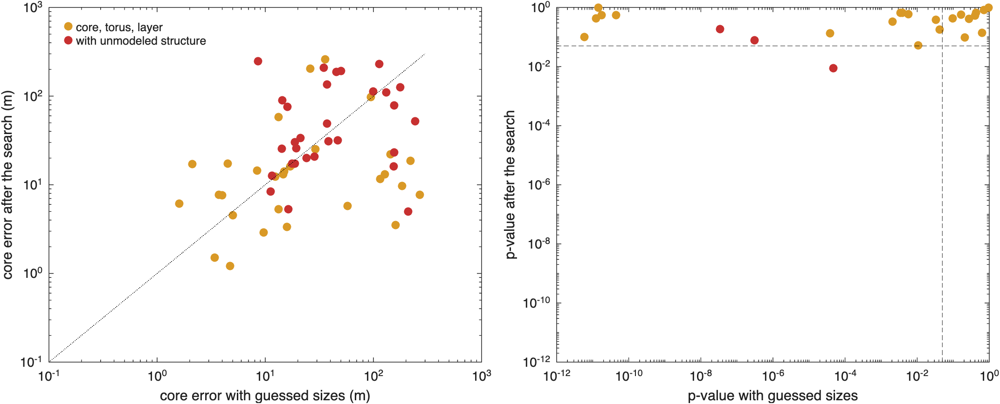
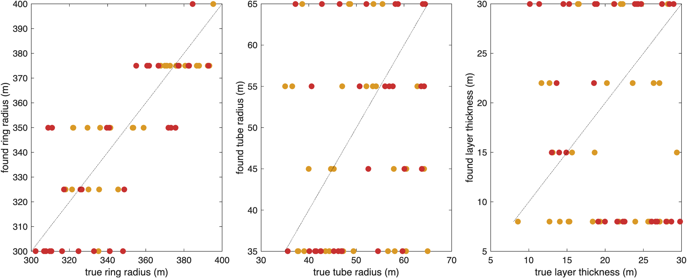
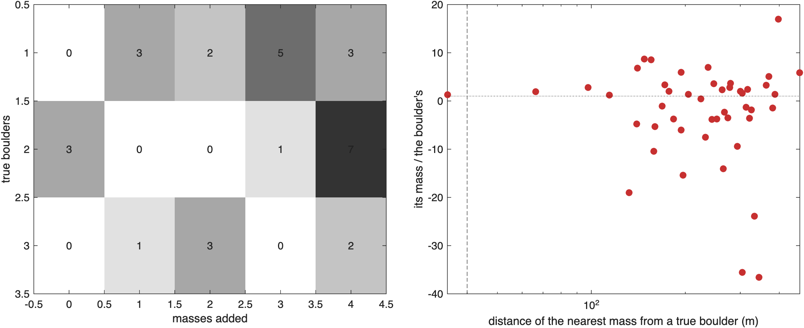

Searching the geometry#
Last edited October 28, 2026
The densities of a model are linear in the measurements; its geometry is not. sbtk.invert.run estimates the
densities, and by Gauss–Newton the centers and axes it is asked to, from where the model starts. It does not estimate
sizes (the radii of a torus, the thickness of a layer), it finds the minimum of the valley it starts in, and it fits
only the components it is given. What the study found showed what that
costs: with guessed sizes a core is placed within 10 m in about a third of the interiors, and with boulders the model
does not fit at all. sbtk.search searches the geometry systematically, for any model and any set of measurements.
The method#
For fixed geometry, the densities cost one small least-squares solve. With every center, size and axis fixed, the measurements are linear in the densities, and with the mass constraint one density follows from the others. The of a geometry is then the minimum over the densities, from the component integrals alone. The integrals of a component depend only on its own geometry: a grid that varies the ring and tube radii and the axis of a torus, the thickness of a layer and the position of a core needs integrals for each value of each component's own parameters, and then a least-squares solve for every combination. 140 torus shapes, 4 layer thicknesses and 17 core positions are 9,520 combinations from 161 integrals; on the 49,152-facet Didymos model a torus integral takes 0.9 s and a solve a fraction of a millisecond.
The search goes from the coarse to the fine and adds parameters only where the measurements need them:
- Grid (
sbtk.search.grid): every combination of the values of the searched parameters, densities without bounds; the best few fitted again with the bounds ofsbtk.invert.run. The profile of each parameter, the lowest over all others at each of its values, shows which values the measurements allow (sbtk.plot.search_profiles). - Gauss–Newton from the best points (
sbtk.search.refine): the centers and axes with derivatives refined from each of the best combinations, which start in different valleys; the fits ranked by . - Compact masses (
sbtk.search.add_masses): the residuals of the model tell where one more mass would lower most. For every position of a grid of candidates inside the body, a point mass (a sphere inside the body is exactly one) is added and the densities fitted again: one solve per position, a map of where and with which sign the measurements ask for mass. The best few positions are refined by Gauss–Newton with the position derivatives, then with all the estimated geometry free, and the mass is kept only if it lowers by at least the quantile of with 4 degrees of freedom, the likelihood-ratio test for a model with a center and a density more (9.49 for ). The step repeats until the model is consistent with the measurements (), a mass is not significant, or a largest number is reached (sbtk.plot.search_masses).
sbtk.search.run does the three steps in order, each from the best result of the one before, and logs each.
What can be searched#
Any component of any model, by name, with sbtk.search.parameter:
| Component | Fields | Gauss–Newton |
|---|---|---|
| sphere | center_km, radius_km |
center |
| ellipsoid | center_km, semi_axes_km, axis |
center, orientation |
| torus | center_km, ring_radius_km, tube_radius_km, height_km, axis |
center (height), axis |
| layer | depth_km (top and bottom) |
– |
| sector | frac, lat_deg, lon_deg, axis |
– |
Sizes have no derivatives in SBTK and are searched on the grid; centers and axes are searched coarsely on the grid
(the side of a core, the tilt of a torus) and refined by Gauss–Newton. sbtk.search.directions spreads axis
directions evenly in a cone. Several parameters of one component vary together. The measurements can be any set:
all coefficients, a subset (sbtk.data.select_coefficients), inertia rows; the search targets whatever
obs contains.
Two limits hold for any search:
- A sphere inside the body is a point mass. The coefficients see its mass and position, not its radius: a dense
small sphere and a less dense large one give the same coefficients. Its radius matters only through the density
bounds (
opts.rho_max_kgm3caps its mass). - A thin layer is seen through its mass per area, thickness times density, unless the measurements are precise enough to separate them. Its profile is then flat along the thickness.
Functions#
| Step | Function |
|---|---|
| Parameters and axis directions | sbtk.search.parameter, sbtk.search.directions |
| Grid | sbtk.search.grid, sbtk.plot.search_profiles |
| Gauss–Newton from several starts | sbtk.search.refine |
| Compact masses | sbtk.search.add_masses, sbtk.plot.search_masses |
| All steps | sbtk.search.run, sbtk.search.settings |
What the search finds#
tests/studies/geometry_search_study.m searches the 60 interiors of the
coefficient reading study that have a torus and a layer, exact and with
the Hera radio-science noise, with a core, a torus and a layer: the core along the center-of-mass offset (−80 to 80 m),
the ring radius (300 to 400 m) and tube radius (35 to 65 m), 7 axis directions up to 4° from and 4 layer
thicknesses on the grid (9,520 combinations from 161 integrals), Gauss–Newton on the core position and the torus
height and axis from the best three starts, then up to four compact masses. It compares the result with the true
interior and with the same model of guessed sizes. 120 searches took 2.7 hours on 10 workers, 7 to 17 minutes each.
Geometry search study: medians over the true models of each family (noisy data, degrees 1-5).
search: sbtk.search.run (grid of sizes, axis and core position; Gauss-Newton; compact masses).
fixed sizes: the same model with guessed sizes, core placed by its chi-square profile and Gauss-Newton
(coefficient_reading_study.m). Boulder found: a mass within 40 m of a true boulder.
== core, torus, layer (30 true models)
search fixed sizes
core within 10 m (fraction) 0.43 0.33
core error (median, m) 12.7 15.4
mass excess error (median, of the true) 0.18 0.46
consistent (p >= 0.05, fraction) 1.00 0.33
density R2 (median) 0.26 0.23
ring radius error (median, m) 7.1
tube radius error (median, m) 11.6
torus height error (median, m) 2.2
torus axis error (median, deg) 0.62
layer thickness error (median, m) 7.9
masses added (mean) 0.07
true boulders (mean) 0.00
boulders found (fraction of true) 0.00
time per true model (median, s) 454
== with unmodeled structure (30 true models)
search fixed sizes
core within 10 m (fraction) 0.10 0.03
core error (median, m) 32.7 36.0
mass excess error (median, of the true) 0.62 0.55
consistent (p >= 0.05, fraction) 0.27 0.00
density R2 (median) -0.21 -0.31
ring radius error (median, m) 13.8
tube radius error (median, m) 8.1
torus height error (median, m) 5.3
torus axis error (median, deg) 1.91
layer thickness error (median, m) 11.2
masses added (mean) 3.20
true boulders (mean) 1.77
boulders found (fraction of true) 0.02
time per true model (median, s) 1030Geometry search study: medians over the true models of each family (exact data, degrees 1-5).
search: sbtk.search.run (grid of sizes, axis and core position; Gauss-Newton; compact masses).
fixed sizes: the same model with guessed sizes, core placed by its chi-square profile and Gauss-Newton
(coefficient_reading_study.m). Boulder found: a mass within 40 m of a true boulder.
== core, torus, layer (30 true models)
search fixed sizes
core within 10 m (fraction) 0.83 0.53
core error (median, m) 3.5 8.4
mass excess error (median, of the true) 0.11 0.38
consistent (p >= 0.05, fraction) 1.00 0.57
density R2 (median) 0.45 0.05
ring radius error (median, m) 6.9
tube radius error (median, m) 8.9
torus height error (median, m) 0.6
torus axis error (median, deg) 0.06
layer thickness error (median, m) 8.7
masses added (mean) 0.00
true boulders (mean) 0.00
boulders found (fraction of true) 0.00
time per true model (median, s) 437
== with unmodeled structure (30 true models)
search fixed sizes
core within 10 m (fraction) 0.13 0.10
core error (median, m) 26.7 26.9
mass excess error (median, of the true) 0.29 0.40
consistent (p >= 0.05, fraction) 0.57 0.03
density R2 (median) -0.28 -0.12
ring radius error (median, m) 15.7
tube radius error (median, m) 10.5
torus height error (median, m) 3.1
torus axis error (median, deg) 1.65
layer thickness error (median, m) 8.6
masses added (mean) 2.67
true boulders (mean) 1.77
boulders found (fraction of true) 0.02
time per true model (median, s) 948
Interiors of a core, a torus and a layer. The search fits the coefficients in every interior ( in all 30, against 10 of 30 with guessed sizes), places the core within 10 m in 43% (83% without noise, against 33% and 53%), and determines the core's mass excess to 18% (11%), against 46% (38%). The torus comes out with its ring radius within 7 m, its height within 2 m and its axis within 0.6° (median, with noise). Its tube radius and the thickness of the layer are not determined: at degree 5 a thin torus and a thin layer are seen through their mass (cross-section or thickness times density), and the grid ends at its first or last value as often as near the true one.

Interiors with boulders and a random field. The search fits the coefficients in 27% of them with noise (none with guessed sizes) and 57% without, but the core is no better placed (within 10 m in 10% and 13%), and the compact masses do not find the boulders: about three are added per interior, each passing the likelihood-ratio test, at a median 230 m from the nearest true boulder (2% within 40 m), with masses up to tens of times the boulders' and of either sign. They fit the coefficients, and the density moves further from the true one (median of the density −0.10 before them, −0.21 after). The boulders are 25 to 50 m across, at most 10⁻³ of the mass, 120 to 260 m from the center: to degree 5 their fields are smooth, and other components (the torus's tilt, the random field, a mass elsewhere) make the same coefficients. A compact mass that passes the test says that the model lacks something the coefficients see, not where a boulder is.

In short: search the sizes and the axis on a grid and refine by Gauss–Newton from each valley; it finds the parameters the coefficients determine (the core, the ring radius, the axis) and shows by its profiles which they do not (a thin tube or layer). Add compact masses to see whether the model lacks structure, not to locate boulders, unless they are large and shallow enough to dominate a degree.
Point masses on the same interiors#
The same 60 interiors fitted with point masses, which assume no shapes, are on the Point masses page.